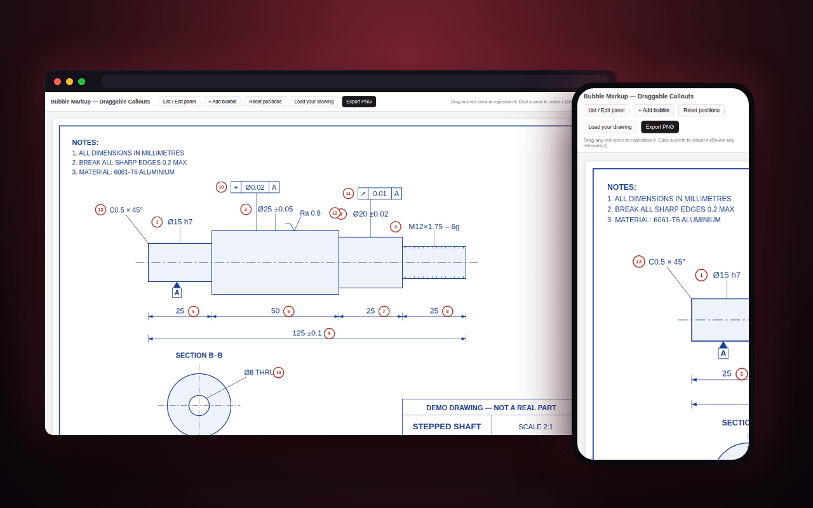

Drag to place
Every balloon is a pointer-captured handle positioned in percentages, so it stays put at any zoom.
Every characteristic on a drawing gets a number before the part gets measured. Drag the balloons into place, load your own drawing, export the sheet.
Load a drawing · drag to place · export PNG

Before a machined part is inspected, every characteristic on its drawing gets a numbered balloon, so the inspection report can say balloon 12: in spec and mean exactly one dimension. Doing that in a PDF editor is slow, and placement is the whole job. This does only that job.
Every balloon is a pointer-captured handle positioned in percentages, so it stays put at any zoom.
Labels like 1a, 5b and 19a for the geometric tolerances hanging off a dimension.
The full list, add a balloon by label, delete with a click or the Delete key, reset to the defaults.
Re-rendered at the drawing's native resolution, balloons scaled to match.
Any image, straight from disk; nothing is uploaded anywhere.
Vanilla JS, pointer events and a canvas export — one file. It sits beside The Shop: the part of the job that happens after the program runs and before anyone signs off on the part.
The copy used on the floor carried a real customer drawing, and that drawing is not published here. The sheet loaded on this site is an original demo part drawn for the page. Positions live in memory — reload and they reset — so export before you close the tab.
Numbered before it is measured.
more in craftkeep scrolling · it opens right here